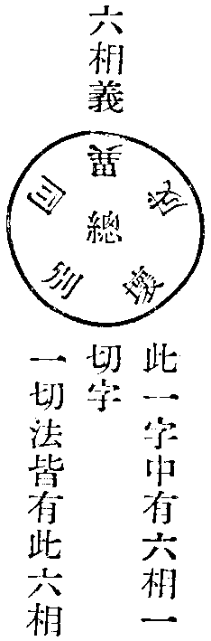

新華嚴經論卷第二十四
六又發大願已下。至無有休息。有五行半經。明願化一切三界四生眾生皆安住一切智智廣大無休息分。此一段明教化三界四生法。欲界心多者。勸令觀諸法苦空無常對治欲惡。修諸善法樂清淨定。淨治心垢離貪嗔癡慢。破欲界業得寂淨樂。色界心多者。住息想禪。生有漏善界方便。勸修十波羅蜜慈悲喜捨。令方便成就自體無作大寂定門。離息伏想。現一切智。成就無量巧方便智。教化眾生。若無色界心多者。方便教化修廣多聞慧。分別世間一切事業令無迷滯。無定亂體起大願力。成就神通供佛法僧。修一切種一切智智。教化一切無盡眾生皆成佛故。如是依根發起調伏。使令皆至一切智智者。根本智中修差別智也。如根本智。依無作定顯差別智。依根本智加行起觀方成。或自力不終。佛菩薩先達之者學而方得。
七又發大願已下。至無有休息。可有四行經。明願以智明了麁細世界廣多無限分。有形世界名麁。無形世界名細。亂住者。多類雜居。如此閻浮提諸雜居世界是也。側住如四天王居處是。倒住者。如胡蜂巢等是。正住可知。若入者。如土居眾生。只若入不欲出。若行者。如人等身中八萬四千戶虫居而人或行住坐立者是也。若去者。如流水居眾生其一向流去是也。帝網差別者。如天帝網重重光影互相容也。如是世界重重共住。即華藏莊嚴世界是。與眾生世界海共住。業不相妨。猶如帝網互相容而住。各依自業相見。如經云。一切種一切智智者。明菩薩大慈悲種。由大願力助成一切智。由定方現差別智。由觀助成。總以此知之。皆依根本智起無限智門。總由此也。
八又發大願已下。至無有休息。有六行經。明願佛國互相參入莊嚴分。此一段明入智境界佛剎如光影互相參現故。
九又發大願已下。至無有休息。有七行經。明願諸菩薩同志行無怨嫉分。
十又發大願已下。至無有休息。有五行半經。明願乘不退輪行菩薩行身語意業見聞者無空過分。
十一又發大願已下。至無有休息。可十行經。明願於一切世界隨眾生欲示現成佛。入涅槃分。
第五佛子已下。有七行半經。於此段中分為兩段。一從佛子已下。至眾生界盡我願乃盡。有五行半經。明十盡句分。二而眾生界不可盡已下。至無有窮盡。可有兩行經。明願不盡分。言世間轉法轉智轉界者。明眾生三界流轉法流轉智流轉眾生界盡菩薩願行方盡如是不盡願行不盡。
第六佛子已下。一段有八行經。分為三段。一明發十盡大願已得十種柔軟心。二得十種信。三舉要言之已後。一行都結。如文可解。
第七一段十七行半經。分為五段。此一段是當歡喜地中第七地相觀苦成悲門。一佛子已下。至如是廣大。有三行經。先舉佛正法甚廣大分。二而凡夫心墮邪見已下。至於三界田中復生苦芽。有六行經。明凡夫心墮邪見而生苦趣相續不斷分。三所謂已下。至如是眾生生長苦聚。有四行經。明十二因緣有支為生因分。四是中皆空已下。至不覺不知。可有兩行經。明眾生不知身空無我分。五菩薩已下。至大慈光明智。可有三行經。明見眾生苦發悲愍分。此一段十七行經。約立四門分別。一舉體示迷門。二凡夫迷體成苦門。三不了緣生無體流轉門。四菩薩達真愍苦接生門。
第一舉體示迷門者。即如初三行。是舉諸佛正法如是甚深如是寂靜如是寂滅如是無相等。愍念凡夫不悟邪見無明長夜覆翳輪轉苦流。
答曰。為真如理智體皆無性。無性理智不能自知。若也自知不名無性。但有眾生緣隨境流轉。不如善惡。為隨境變。業有差殊。或因佛菩薩為說苦因。或自因苦生厭。方求正見不苦之道。若也未厭苦果終不信聖言。未可自知是真是假是苦是樂。但受得其生都無厭患。驚怖熱惱都不覺知。若不深自勤修責躬匪懈作諸定觀入法界之真門者。終未可盡其苦源也。
第二凡夫迷體成苦門者。如後凡夫心墮邪見已下。於三界田中復生苦芽。有六行經是。於此段中所受苦生有十八種煩惱。皆依二種煩惱起故。云何為二。一根本無明為長夜所覆。二邪見逐境常流轉不息。此二種無明。非達得成根本智。方成智用。非三乘空觀能斷得故。是故勝鬘經云。聲聞緣覺及淨土菩薩。但能折伏現行煩惱。不名為斷煩惱。為折伏故。得變易生死。菩薩得隨意樂生身。皆有忻厭。自他佛剎皆未得法界普光明智。未得與十方諸佛同一智海永絕邪見自他取捨一切見流。為迷前二種無明妄生厭捨。別證真如及空相。迷大智故。是故淨名經云。一切煩惱諸塵勞門。以為佛種。此無明邪見一乘菩薩達而成智。三乘折伏現行。亦云留惑潤生。此乃皆非稱智而說。不同一乘依不動智上自有無邊大自在用門。如十信位中十箇智佛。是以不動智佛為首。如此無明及邪見。與一切煩惱而作根本。自餘已下。一切諸煩惱皆從此生。總名隨煩惱。為依根本而有故。如無明通總名邪見。因境起識為因。六根中見名色等。為名色對六根作境。因境識種取著。名之邪見。為迷真理智號曰無明。以名色識種起邪見。三種對於六根。根根之上皆具有三。且如耳根聞聲。知如是聲。皆有名色識起邪見等三種。如眼根鼻舌身意。總具此三名色識及六根。以名色為境根為主。識為取思之可見。是故此經云。不離此名色增長生六處聚落。於中相對生觸觸生受受生愛愛生取取生有有生老死等是也。如憍慢。二種為增長。無明能成增長苦種令不摧壞。是故經云。立憍慢幢入渴愛網中。如愛為津潤無明能潤生死。常流轉故。為非愛不受身。如諂誑。是稠林無明。為自迷覆廣多故。為凡夫常所行無暫間斷故。此非修定業。不可制之。如慳嫉二種。是常計無明。與惡道生死更加勝因。是故經云。心與慳嫉相應不捨。恒造諸趣受生因緣。如貪恚愚癡。是集業無明。是故經云。貪恚愚癡積集諸業日夜增長。如忿恨無明。與嗔作因。是故經云。以忿恨風吹心識火熾然不息。欲流有流無明流見流。此是常流無明恒流轉不息。明是四流大河常流不息成大苦海。若心無念諸流頓竭。若也智現便成法流。如是十二有支互為主伴。則一支上有十二支。總一百四十四有支。以成無邊生死。已上十八種煩惱無明。皆依十二有支以為根本。十二有支依名色邪見為本。若以無作定門印之。八萬四千塵勞。總為法流智海。如是無明名色。對五根。有觸受想行。總以心生意取為主。如是九緣同起了境名識。以此十事總名無明。總名邪見。作一切煩惱迷心及境。名曰無明。境者。名色是也。六根對境邪見隨生。
第三不了緣生無體流轉門者。此之一段明迷真逐妄所生之因。從所謂已下。至生長苦聚。四行經是。所謂因依名色。對六根所緣。生觸以觸故。六根取受。因受生愛。因愛生取。因取生有。有生故有老死憂悲苦惱。以名中具色。色中具名。名色二存聲香味觸總在其內。以有有表色無表色故。但心意眼耳鼻舌身意所緣擊發成惑者。皆為觸。唯如來無為純與智俱無法觸也。眾生觸受成三界之煩惱。聲聞有厭生死證涅槃觸受。淨土菩薩有淨穢二種觸。一乘菩薩有圓和智悲未自在觸。如是諸觸以智明觀。以成智用。是故淨名經云。受諸觸如智證。又法本不生今則不滅。是明緣生體自性無性非生滅法。凡夫不了號曰無明。但知心境本無即起唯法起。常是智境非生滅緣。以定慧觀照即自然開解。
第四菩薩達真愍苦接生門者。即從是中皆空離我我所。至大慈光明。智五行經是。如是十二有。支一切眾生。從此而起前十八種煩惱。而流轉生死。無苦不受。聲聞緣覺淨土菩薩厭而伏之現行不起。一乘菩薩以此十二有支而成根本智。起差別智。教化眾生住持善法。及成菩提心。意明迷悟不同非十二有支與智異故。如勝鬘經亦同此說。如上十八種煩惱。如邪見無明。十住初發心住上初生如來智慧家時。正使能作惡道。邪見以除故。習氣微薄。未盡憍慢等十八種總爾。以十種故。十行十迴向法中有十法加行治之。漸漸微薄至十地。以正智增明。唯有見道隨行法執。無隨三界現行。習氣不善之業。如慳嫉忿恨嗔五種。入十地中習氣已無。自餘至七地。悲終智滿方成隨願智用。只可名為達煩惱而成智用。不可名為斷煩惱故。法執現行至七地故。法執習氣十地方無。如算數廣大愚隨好功德愚。此二愚至佛果行終方見盡。如阿僧祇品隨好光明功德品是。是故如來自說二品。明經佛果二愚是故。明十二有支微習直至佛果方盡。以此安立五位十度。十十治之。皆十住十行十迴向十地十一地法則皆體相似。以明治習階級不同。如是五位十波羅蜜。皆初三波羅蜜。以治從纏出世之道。如善財。十住中初及二三知識。以三比丘表之。次後三波羅蜜。以治出世間世間之惑。即以彌伽長者解脫長者海幢比丘表之。次以方便波羅蜜以下。願力等三波羅蜜門。以治入世間中出世間令悲智自在。即以休捨優婆夷仙人苦行婆羅門表之。次以世間出世間智悲自在故。即以智波羅蜜以智生悲得自在故。即以師子幢王女名曰慈行表之。智自在如王也。以七住中以修悲生智。以此第十住中以智生悲故。為王女也。明以智波羅蜜以智成悲而自在故。此明五位進修。位位有此四種勢分差別同異。至善財知識。一一差別同異重明。方得了其五位解行同異。從此十地法門。亦如上有此四種治惑差別同異。一從初地至第三地。是治世間中染成出世間習。四五六地是治出世間中世間智慧不自在習。七八九地是治入世間中悲智不自在習。是故八地位中諸佛以作三加七種勸發以用防之。如八地位中。具明第九第十地智波羅蜜治世間悲智得自在故。是故以如來為太子時第三夫人瞿波表之。明大慈大悲已滿。是表慈悲法悅義。如善財於十地中表法。有九箇女天一箇佛妻。為明此十地法門長養大慈悲門令圓滿自在故。故以女天表之。至彼位具明。仍普賢利他行未自在。大略約敘五位昇進。大意有六。一十住明創生佛家且除正使煩惱。二明十行治隨世現行習惑。三明十迴向起大願力和融智悲使世間出世間無礙利物。四明十地長養蘊習悲智功圓。五明十一地普賢行滿。即普賢行品是。及十定品已後是。六明成佛位終即如來出現品是。如離世間品。明進修佛果以後普賢恒行。法界品即前後一部之經皆是以法界為體。如是以法界大智圓通。總無一法一時有前後差別。以智照之可見。如是五位中差別行位。總在初發心住中。以願行智悲普印令圓滿故。教雖前後。願行悲智法是一時。時亦不異。法亦不差。是故發心之士。應如是修。如是圓滿。不離如來不動智之體圓滿故。於一佛果智悲始終徹故。普見一切眾生是佛國土無出入故。教化迷如來智中眾生令依本故。令諸眾生於自智中普見諸佛同一智故。不於自智生別有佛想故。令一切眾生不於自身起內外遠近見故。以一智印印之。破情有大小長短量故。如是修行。即是令諸眾生佛種不斷故。為諸眾生說如斯法。是故能令法種不斷。普令一切眾生普見自身同佛智海入佛知見。是故能令僧種不斷。一一如是觀察而令心境如是相應。
第八一段二十一行半經。分為三段。此是初地中第八地相。第一佛子已下。至凡是所有一切能施。有兩行半經。明一切能捨分。所謂已下。至是名菩薩住於初地大施成就。有六行經。明此位中為求佛智故於身命財無悋惜分。於此段中其施有三。一財寶施。二象馬妻子施。三頭目眼耳身肉施。第二佛子菩薩以此慈悲已下。至於佛教法能說能行。有十行經。明此位菩薩成前施已得十種利益分。一明大慈悲大施所緣。二明所施為求正法所為救眾生故。三求出世智無疲勞心。四於一切經論無怯弱心。五善籌量上中下眾生隨力而行成世間智分六慚愧莊嚴修自利利他之道七勤修無退。八成堅固力。九供養諸佛。十於佛教法隨說能行。第三佛子已下。至依教修行。有兩行半經。明總結成就十種淨諸地法分。具如經說。如此段中。已如上信慈悲喜捨無有疲厭。知諸經論善解世法慚愧堅固力供養諸佛以教修行。以為法門。淨治行地。以檀度為體。餘九為伴。
第九段中十八行半經。約分為三段。一從佛子已下。至迴向無上菩提。有七行半經。明以願力得見多百千佛并及悉承事供養分。二佛子已下。至隨意堪用。有七行經。明因供養佛獲勝益分。三佛子已下。至隨意堪用。有四行經。明金師鍊金數數入火喻菩薩修行轉增上分。此一段如文自具。
第十段有二十八行經。約分為三段。一佛子已下。至成於如來智慧光明。有十四行經。明菩薩入初地已更求此地。及十地入如來地相因果分。二佛子已下至悉免憂患。有六行半經。明以商主所往大城。喻菩薩問於諸地行相安危一時齊備所資具分。三佛子已下。至百千阿僧祇差別事。有七行半經。明菩薩修行善知地相安危主道眾生令得無礙解脫如商主分。
第十一段中。有二十行半經。是正答前所問。佛菩薩善知識初地及十地因果分。於此段中。復分為二段。第一從初佛子已下。至一切智智。有八行經。於中大意有五。一正舉初地之果。二明能護持正法。三明所行四攝之行。四明一切所作不離念佛法僧。五明不離念具一切智智。如一切種者。是以加行大願助成大悲種故。一切智智如前已明。又起大志樂修一切智及差別智。廣行大悲種。由熏修所生。如一切智由定顯發故。差別智由依師教先達者修學方成。皆依根本智而有。或因自根力上上觀達得明解之徒必藉師教。第二復作是念已下。至而說頌曰。有十二行經。明此位菩薩能捨家妻子修出家法。得見百佛境界法門分。於此十二行半經中。大意有八。一堪與眾生為首。二堪與求一切智及差別智者為依止。三明難捨能捨。四明出家勤行精進。五明所得三昧有百。六明依報見佛之數。七明以願力見佛增廣。八明重說。其頌如上。見多百佛者。即是華藏智境。一佛剎海融十方諸佛剎海。互參遍徹之多百。非如三千大千世界佛境限之百佛故。乃至身塵毛孔等周法界虛空界之百也。不可如情所知之百佛故。此是智境無限中多百。但以定安立隨位昇進之法。明其昇進。然其一一佛境不可存其中邊量見。但如自觀身智境無中邊見。何得論佛境有邊量見。此初地中間十地及如來地法為一地。通修十地及佛地法故。此中因果依十迴向中佛果名妙。以十地但成就十迴向中大願海令滿彼大願行故。亦不離初信心中金色世界不動智佛文殊師利普賢等行。如經頌曰。佛子始發生。如是妙寶心。則超凡夫位。入佛所行處。
第十二說頌中。有四十六行半頌。明重頌前法。如文自具。夫驗經所說入此初地法。乃至是創始具足凡夫。能發廣大願行能趣入故。非是由因地前行解而來者。意明設教備明修行滯障節級安危。然發心者一時總頓修。居一時一行之內。非是要從節級次第來修。以總別同異成壞六相法。圓融可見。於此六字三對法中。一字有六且如人類之。餘可准知。如一人身具足是六相。頭身手足眼耳鼻舌等用各別是別相。全是一身一四大。是總相。一空無體是名同相。不廢如是同無異性。頭身手足眼耳鼻舌等用有殊。是為異相。頭身手足眼耳鼻舌等共成一身。名為成相。但隨無作緣有。各無自性。無體無相。無生無滅。無成無壞。名為壞相。又一切眾生名為總相。愚智區分名為別相。皆同佛智而有名為同相。隨執業異名為異相。所因作業受報得生名為成相。心無所依業體無生名為壞相。又十方報佛名為總相。眾寶所嚴身土差別名為別相。同一法身理智無二名為同相。智隨行異名為異相。成就眾生名為成相。能所皆無無得無證名為壞相。又以一智慧該收五位名為總相。行解昇進名為別相。同佛根本智名為同相。修差別智名為異相。成大菩提具普賢行名為成相。智體無依用而不作名為壞相。又三世久劫差別名為別相。以智普觀在一剎那名為總相。隨業長短名為異相。情亡見盡長短時無名為同相。智無依住名為壞相。應根與法名為成相。約舉五翻六相同異。自餘一切法准此例知。又明一字中有六相義互為主伴。十玄義亦在此通。一同時具足相應門。二一多相容不同門。三諸法相即自在門。是其義也。
六相義
。
一切法皆有此六相。
若善見者。得智無礙總持門。於諸法不滯有無斷常等障。可以離情。照之可見。此六字義闕一即理智不圓。是此初地中觀。通世間一切法門故。
第二離垢地
將釋此地。約作五門分別。一釋地名目。二明此地修何行門。三明善財表法。四明此地於三界中得何界解脫。五隨文釋義。
一釋地名目者。何故名為離垢地。為此位治上上十善戒。上上十善戒即法身性戒能自體無垢故。故名離垢地也。
三明善財表法者。善財此位中知識號普德淨光夜神。此是女天。在菩提場內。善財得菩薩寂靜禪定樂普遊步解脫門。凡是夜神河神海神地神。總是女神。表慈悲位。明此十地蘊積大悲滿。淨光夜神者。為滿普賢願行故。夜神者。常居生死大夜破一切眾生長迷暗故。神者。其智應真。號之為神。此女天在菩提場內者。明以法身妙理為戒體故。善財得菩薩寂靜禪定樂普遊步解脫門者。明以性戒遍周行齊法界不為而用對現色身常處世間不染塵垢。故為名也。以體用恒寂故。以禪定是體遊步是用樂是法樂。此神住菩提場內者。為上上十善是全體菩提法身妙理。又是初歡喜地婆珊婆演底夜神本發心之師。明一切發心以菩提妙理為體故。
四明此地於三界中得何界解脫者若以菩提無作之體。即三界六道總通解脫。是總相義。若也別相論之。善知三界法差別者。即以戒體能治欲界煩惱。以菩提妙理現前。且能觀欲界煩惱行相。以菩提妙理。且治欲界惑習故。色無色二界三地位中修八禪定。方明此色無色界行門。若不如是別別修行。但以菩提無作用。不能簡知三界所染行法。即於三界法不能了達。便同聲聞外道。無大智故。是故此地修戒治欲界煩惱。三地修八禪。治色無色界煩惱。初地明凡夫發心但有大志樂忻求大法故。三地修八禪者。明上界禪皆息想安定。心而住禪。菩薩不息。任體自寂禪。捨彼息心住理自寂。稱菩提故。凡上二界禪。隨其淺深。皆有息心想伏。隨寂靜住。第四禪中無出入息。唯白淨妙色現前。水火風三災不至。為念亡想滅無此業故。唯有色界業在。
五隨文釋義者。於中復分為二。一長科經意。二隨文釋義。一長科經意者。於此第二地中。長科為六段。一諸菩薩聞此已下有五行頌。明諸菩薩聞法歡喜分。二爾時已下一段。有四十三行經。明已修初地欲向第二地捨惡從善分。三佛子已下一段。有三十九行半經。明第二地中善持上上十善分。四佛子已下。有三十九行半經。明第二地中起慈悲眾生分。五佛子已下一段。有三十一行半經。明正入第二離垢地得見多佛分。六說頌已下。有四十二行頌。明重頌前法及請說第三地分。
二隨文釋義中從初五行頌中大意有三。一菩薩聞說初地法歡喜。二散華稱讚。三解脫月知眾心請說第二地。其義如文自具。
第二於捨惡從善段中四十三行經復分為兩段。一從爾時金剛藏已下至以此十心得入離垢地有四行半經。以十心修第二地向。二佛子菩薩住離垢地已下至令他修者無有是處有三十八行經。明第二地菩薩種性自身口意業調善順十善心。具慈悲分。十善者。身無殺盜婬。意無貪嗔癡。口無妄言綺語惡口兩舌。如欲界十善散善修。色界無色界十善。并修定業以息想方至。
第三佛子已下三十九行半經。明善持上十善分中。復分為三段。一佛子已下至如是方便菩薩當學有十四行經。明此位菩薩持十善道分。於此段其意有六。一念十不善是地獄畜生。二念十善業道得生。三界至有頂天。此十善通修非想頂。總名有頂。三上品十善畏苦修真得聲聞乘。得出三界有為心。伏盡三界煩惱入變化生死。有入滅定經劫不覺。四上品十善自覺緣生不具慈悲成獨覺乘。亦得變化生死為根利故。迴向大菩提。易經十千劫。五上品十善修廣大願不捨眾生求佛大智成菩薩行。六上上十善修一切種智清淨故。成十力四無畏。故名為最上乘。以上生天及出世有此五種十善業道。二佛子此菩薩摩訶薩已下至無邊大苦聚有二十三行經。明行十不善業各有二種因果。如經具明。又十不善中亦有上中下三品因緣。受苦不同。如經自具。三是故菩薩作如是念已下至令住其中有兩行經明菩薩自行十善亦教化他行十善業分。如上上十善者。明依智發心。自餘三品雖皆離三界業得出三界果。皆依空發心。漸求佛智。方入普賢願行。為三乘中菩薩。願行雖廣。為未盡佛智故皆有限量。如三千大千國土為佛報境者。以是義故。與佛智中行普賢行者全別。三乘以觀空及五位行門忻理至理。方忻如來種智之門然。更須入普賢願行。即佛果在十信五位後。云滿三祇方至。若不迴心者。俱在門外草庵。上上十善一乘之門。即以如來一切處不動智佛。以為信心。十住位中即入如來智慧之果。十信五位皆以佛果大智。以成行門。即以如來普光明智。以成十住十行十迴向十地十一地為體。即佛果與普賢行同資。以智體圓明出情見故。非三世攝。是以法華經為迴三乘令歸智海。即以龍女表之。此經頓示佛門。即如善財所表。善財雖遍巡諸友。然不動足於覺海之前。慈氏雖受一生成佛之功。然不離一念無前後。無生智海。此是乘一切智乘。古今見盡。情存前後不入佛智之門。且住草庵。止於門外。論主頌曰。
一切眾生金色界 白淨無垢智無壞
智珠自在內衣中 只欲長貧住門外
廣大寶乘住四衢 文殊引導普賢扶
肥壯白牛甚多力 一念遍遊無卷舒
如是寶乘不能入 但樂勤苦門前立
不覺自身常住中 遣上恒言我不及
第四段中四十行經。明第二地中起慈悲分。復分為十段。一佛子已下有四十行經。總有十種慈念眾生心。十種念眾生苦道。令安在十種樂中。如經自具。次第作十種復作是念。是如身邊二見見取戒取。總依邪見起故。標在其首。六道三界無明。總依名色見惡慧惡欲。生離佛意者。明根隨境變。迷自佛智故。我拔出如是險難。令住無畏一切智城。明念苦興悲。令達本智故。又作是念。一切眾生為大瀑水波浪所沒者。明因愛水所沒故。入欲流有流無明流見流生死迴澓者。明總因愛河漩流漂轉故。湍馳奔激不暇觀察者。明前四流峻速逐境。從見起諸妄業。無暇起觀而調伏之故。為欲覺恚覺害覺隨逐不捨者。明此三種惡作流依身見羅剎於中執將永入愛欲稠林故。明因身等五見俱生。五見俱生。六十二見齊起。六十二見者。依毘婆沙說。五蘊中各起四見。四五二十。三世各二十通為六十。通身即是神身異神二見總為六十二見。且於色蘊中即色是我。離色是我。我中有色。色中有我。乘自佛智經五位見諦漸明。復有五因有五箇果。此約本五上立通為十。都有百一十法門。皆有迷障愚癡等法。一如善財童子舉行所障待至彼位具明。如是名為隨位進修未得自在愚癡。直至佛果。所謂算數廣大愚。隨好光明功德分量廣大愚。唯佛窮果方始了知。如阿僧祇品隨好光明功德品如來自說者是。如是隨地位中進修迷障。至善財表法知識一一對行具明。令易解故。隨逐邪道故。又一切眾生人天魔梵聲聞緣覺淨土菩薩。皆是邪見。但為苦樂不同。皆非正見行。顛倒行者。四倒八顛倒等是。猶如盲人無有導師者。明菩薩觀迷起悲求出要道慧濟群品。已下可知。入魔境界者。五蘊魔煩惱魔死魔天魔是也。惡賊所攝者。六根逐境起諸邪見是也。隨順魔心遠生迷真妄取名色。身見邊見戒取見取邪見。常自籠網輪轉苦流愚癡稠林所迷者。如一切眾生愚癡稠林所迷。大要約有八萬四千。大體總論。一迷等虛空迷。為迷自身。如來普光明本智慧海。即等法界虛空界總迷。如是愚癡廣多蔽障本智。故號稠林。如入位菩薩迷道愚癡。隨五位上進修因果有一百。以五位中各有十種波羅蜜。以為昇進之行體。如十住中。從十信以後修方便三昧。是修十住中初發心住向正入初發心住果。所謂得憶念諸佛智慧光明。是入海門國。觀修治地住向觀察一切。眾生海。是清淨法界海。得普眼法門。是正入治地住果。如是五位五十箇法門。皆有二種因果。都有一百箇昇進法門。又從初發心生死稠林故。標之為首。若明此諸見無體。諸見即是法界緣生。起唯法起。見唯法見。隨智而轉所緣。三界六道諸不善道。總由此五種生。若了即入佛知見。已後諸煩惱總無有生。如是五見相破壞者。是離世間業。因此五見而生鬪諍嗔恨。如因貪便起邪命。如三毒因起貪嗔癡業。惡業增盛。名為熾然。清涼涅槃者。業亡智現即樂。又舉愚癡重闇妄見膜者。總明多迷障業為迷名色以障正智。又舉墮地獄畜生餓鬼者。明由前迷障妄墮地獄。此謂十八地獄。十八者鑊湯鑪炭刀山劍樹黑闇寒氷火車火輪鐵網銅柱沸屎拔舌釘身吐火飲銅愚癡火城灰河等。已上十八種地獄。約心所作惡業處即受之。入惡見網中者。明眾我五蘊中各具有此四如是。諸見皆依身所起。是故此經云無身亦無見。得佛無上身。將入愛欲稠林者。明一切生死皆從愛欲所生故。為生死多故如稠林。一剎那間八百生滅。心齊起流注不絕。剎那時盡生滅齊生。於所貪愛。深生染著者。明深作生死業轉轉不休故。所慢原阜者。慢有七慢。慢慢憍慢過慢卑慢我慢增上慢邪慢。原阜者。明慢上更加慢及過慢等。名之曰阜。如世平地更有高地。其上平坦曰原。原上更高為堆。堆上更高為阜。明我慢上加六重慢。此為阜也。安六處聚落者。憍慢原阜上。更加眼耳鼻舌身意。取著名色境。增長苦因已下十四行經。如文可解。此十段經。明此地中觀苦起悲救護分。
第五佛子已下有三十一行半經。明此地菩薩以願力得見多百千佛分。於此段中復分為十段。一佛子已下至那由他佛有三行半經。明此位菩薩以願力得見多佛分。二於諸佛所已下至亦以供養一切眾僧有兩行半經。明以二心五事之供佛及僧分。此中佛法僧者。以毘盧遮那為佛寶。文殊師利為法寶。以普賢行為僧寶。總攝三乘人天六道三寶。總在此三寶中。皆從普賢隨行教成故。三善根已下至布施持戒清淨滿足有四行經。明重受十善戒分。此明初地亦受上上十善。此更重明鍊磨。四譬如真金已下至持戒清淨滿足有三行半經。明舉鍊真金更加礬石更明淨喻。五佛子已下至但隨力隨分有兩行半經。明此位菩薩所行之行分。六佛子已下。至一切智智有六行半經。明此位菩薩受職分。七又作是念已下至一切智智依止者有兩行半經。明此位菩薩自知道德殊勝分。八是菩薩已下至以為眷屬有四行半經。明此菩薩亦能捨家妻子出家得千三昧得見佛分。九若以菩薩殊勝願力已下至不能數知明以勝願力見佛過前依報業力分。十爾時已下明金剛藏說頌分。
第六說頌已下有四十二行頌。復分為五段。一質直柔軟及堪能已下至為諸佛子已開演有三十行頌。明頌前十段法門。兩行一頌。如文自具。二佛子已下至第二地中之行相有四行頌。明大眾聞法興供分。三是諸菩薩已下至願為演說第三地有三行頌。明諸菩薩聞第二地。又請說第三地法分。四與法相應諸智業已下至佛清淨行願皆說有三行頌。明諸菩薩同請說分。五時解脫月復請言已下有兩行頌。明解脫月重請說第三地分。如上云一切種者。以加行熏修種一切智。即是根本智。又智者明以根本智加行成差別智。如根本智因三昧現故。差別智由以根本智觀察加行力修成。若不一一以加行觀察力大願力。即根本智即滯寂。聲聞同乘。故無有用也。
第三發光地
將釋此地。作五門如前地。
一釋地名目者何故。名為發光地。明此地修色無色界八禪定。善達色無色界。世間禪體識相對治。明達三界障惑分。明益令智慧明淨故。故名發光地。為從初地二地以善達欲界中隨纏法。於三地善達色無色界四禪八定法門。得出三界。智慧光明現前故。故名發光地。若但修治欲界煩惱。不修八定達色無色界。由有上二界障在。不名發光。為此地修三界業障盡故。故名發光地。以定能發慧光故。
二明此地修何行門者。以忍波羅蜜為體。餘八為伴。此明三界業障盡故。以此忍名為順無生忍。若也初發心住得佛智慧現前。名初生諸佛智慧家。已十住十行十迴向總得無生忍是總義。若也麁細進修言之地前三賢。名為以佛智慧調伏。名為伏忍。初地二地三地名順無生忍。自四五六地得出三界及世間障亡方名得無生忍。七八九地方名無功用寂滅忍。十地悲智圓該位同諸佛。
三明善財表法者。善財於此位中得見喜目觀察眾生夜天神。在去菩提場不遠。坐蓮華藏師子之座。善財得大勢力普喜幢解脫門。表初地初入地位初發心。第二離垢地是初會菩提之體為戒體。第三地是依菩提之理修忍。忍是行首故。故去菩提場不遠。以菩提成忍行故。坐蓮華藏師子之座。蓮華表在行無染。師子明依主義也。號喜目觀察眾生者。明法忍行慈也。夜天神者如前釋也。善財得大勢力普喜幢解脫者。明出三界障盡法忍成滿貪嗔忿恨惑不能生故。法忍現前有大勢力故。普喜幢解脫者。明能摧壞自他煩惱故。於諸境界不傾動故。於諸違順成法樂故。
四明此地於三界中得何界解脫者。此得三界解脫。為前二地對治欲界。此三地次對治上二界。八禪總是三界障盡故。以四地修三十七助道觀。五地修十諦觀。六地修十二緣生觀。學出世中世間智慧故。
五隨文釋義中。二義如前。第一長科經意者。於此段發光地中。長科為七段。第一爾時金剛藏菩薩已下至得第三地有五行經。明從二地修第三地向起十種心分。第一佛子已下非但口言而可清淨有五十二行半經。明正住第三地觀諸有為法及於一切眾生起慈悲并貴法重人能入火坑受苦樂聞法分。第三佛子已下至而無所樂著有十行半經。明住發光地修色無色界四禪八定隨順法性而行無所著分。第四佛子已下至亦復如是有兩行經。明此位修慈悲喜捨四無量心分。第五佛子已下至明以願力而生其中有三十三行經。明住此地以修禪定獲通力六根清淨分。第六佛子已下至而說頌言有三十行經。明此位菩薩見佛廣狹及受職分。第七而說頌言是說頌分。於此七段經中。
第一爾時金剛藏菩薩已下有五行經。明從第二地。修第三地向。起十種心。如經自具。
第二佛子已下有五十二行半經。於中復分五段。一從佛子菩薩摩訶薩住第三地已下至是為十有十九行經。明觀有為苦無常以十種哀愍眾生分。二菩薩如是見眾生界已下至究竟涅槃之樂有七行半經。明菩薩念度眾生以何方便安置何處令得究竟涅槃之樂分。三便作是念已下至如是觀察了知已可有五行經。明菩薩所念知安置眾生之究竟處分。四倍於正法已下至觀察修行可有十九行經。明菩薩欲度眾生倍勤修求法身命能捨入大火坑無苦分。五此菩薩已下有兩行經。明決定修行非但口言分。
新華嚴經論卷第二十四